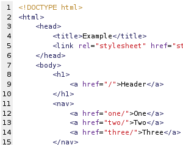

Principales elementos HTML de Etiquetas
Actualmente, existen aproximadamente unas 100 etiquetas o elementos definidos en HTML. Es posible que algunas de estas etiquetas no se encuentren disponibles en algunas versiones HTML.
• html : Esta etiqueta engloba o representa el inicio y el fin de un documento HTML. Salvo alguna excepción que veremos más adelante, cualquier otra etiqueta del documento debe estar definida dentro de la misma.
• body: Etiqueta que engloba el cuerpo del documento HTML, cualquier contenido o información que vayamos a mostrar en nuestra página web debe estar codificado dentro de esta etiqueta.
• head: Es la etiqueta que define el inicio y el fin de la cabecera del documento HTML.
• meta: Emplearemos esta etiqueta para definir las propiedades de nuestro documento HTML. Por norma general, esta etiqueta recoge datos tales como autor, descripción de la página, palabras claves, software o editor con el que se ha generado el documento y tipo de contenido.
• name: Dependiendo del valor de este atributo estaremos describiendo una información u otra: author para definir el autor de la página web, description para describir el contenido del sitio web, generator para establecer el nombre del editor HTML que estamos utilizando y keywords para definir las palabras claves que identifican el contenido de la web.
• http-equiv: Maneja información que se envía al servidor en la cabecera http.
• content: Recoge el valor de los atributos name y http-equiv.
• title: Etiqueta que define el título o nombre de nuestra página web.
• link: Utilizaremos esta etiqueta para definir las rutas donde el documento HTML debe buscar las hojas de estilo externas (CSS) o iconos. Si declaramos esta etiqueta, debe ser siempre dentro de la cabecera. Los principales atributos de esta etiqueta son: - href: Ruta donde se encuentra el recurso en cuestión. - rel: Relación entre el documento y el objeto o recurso que estamos vinculando. - type: Tipo de MIME del objeto enlazado. Un ejemplo de uso del elemento link: link href="css/estilo.css" rel="stylesheet" type="text/css"
• script: Etiqueta pensada para incluir código JavaScript en nuestra página web. A diferencia de las anteriores, esta etiqueta y su contenido puede ser declarada tanto en la cabecera como en el cuerpo del documento. Sus posibles atributos son: - src: Especifica la ruta del fichero externo. - type: Tipo MIME del fichero al que estamos haciendo referencia o bien del código incluido en la etiqueta. Según Gómez, M. R. (2013). HTML, CSS Y JAVASCRIPT.
REFERENCIAS
Gómez, M. R. (2013). HTML, CSS Y JAVASCRIPT. Obtenido de https://anayamultimedia.es/primer_capitulo/curso-de-desarrollo-web-html-css-y-javascript-edicion-2021.pdf